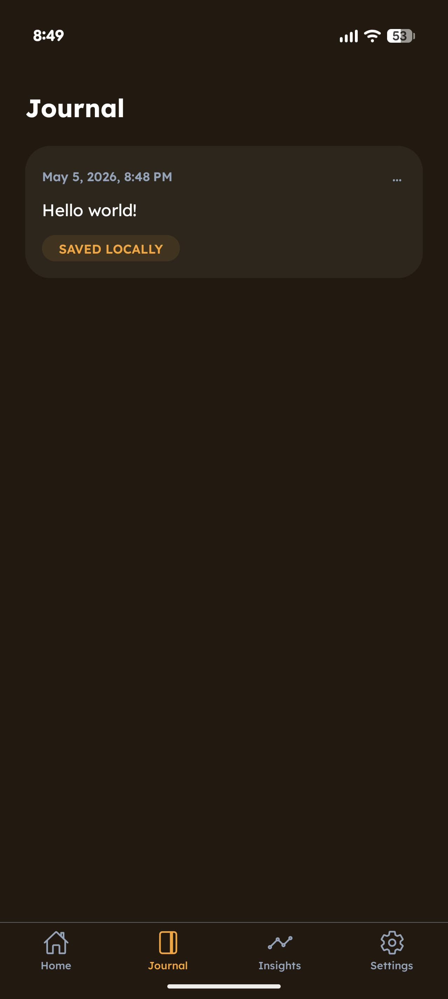
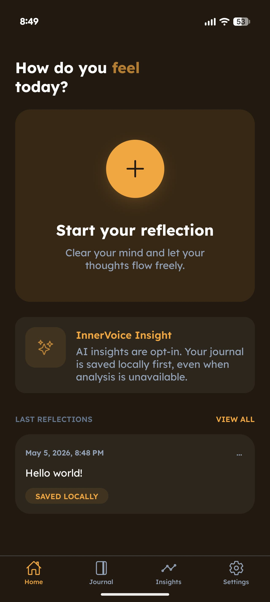
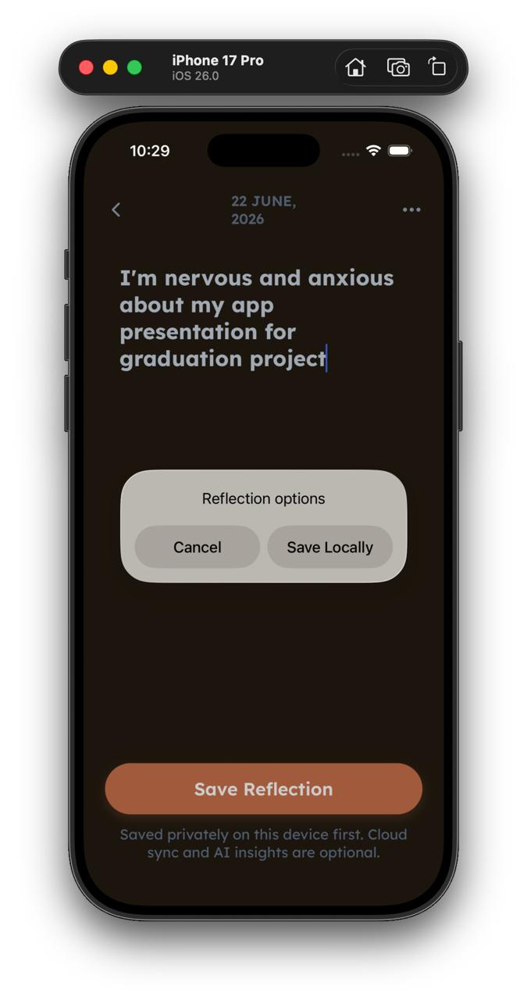
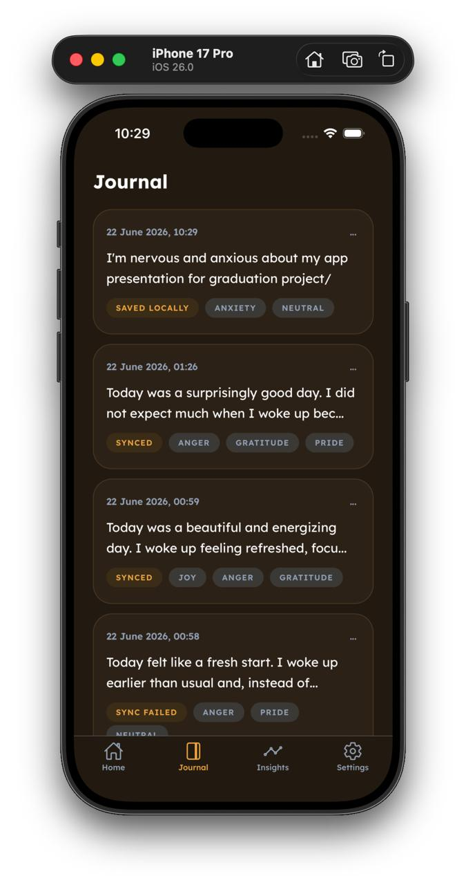
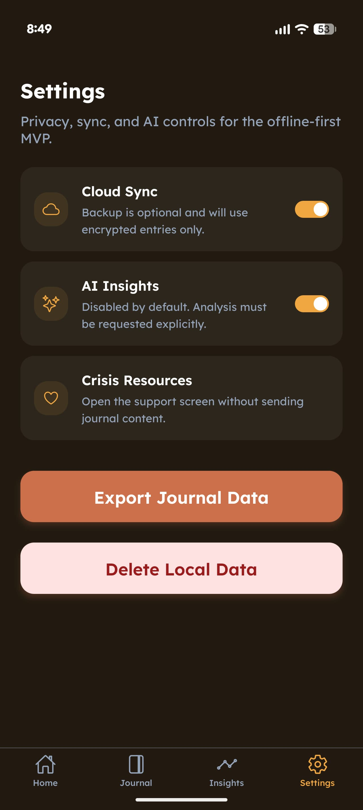

A privacy-first AI journaling and reflection app with a dedicated frontend, API backend, semantic memory, and responsible AI boundaries.



InnerVoice is a privacy-first AI journaling and reflection system developed as a thesis project. It explores how personal diary entries can support emotional reflection, long-term context, and personal insight while keeping sensitive user text at the center of the system design.
InnerVoice is designed as a reflective journaling assistant, not as a medical, diagnostic, or therapeutic tool. The product framing focuses on privacy, self-reflection, emotion awareness, and responsible AI safeguards.
The app/frontend part was created by me. The API/backend part was created by @fxidirzade, my teammate for the Graduation Final Project. The backend and AI stack includes Django, Django REST Framework, PostgreSQL, pgvector, Celery, FastEmbed, spaCy, vector search, and retrieval-augmented memory concepts.
InnerVoice was developed as a Graduation Final Project. I created the app/frontend part, while @fxidirzade created the API/backend part.
The app source code is available on GitHub.
A user writes a diary entry, the backend receives it through a REST API, privacy-related processing prepares the text, NLP and embedding components generate useful metadata and vectors, PostgreSQL with pgvector stores retrievable context, and background workers handle heavier tasks. Retrieval can then bring relevant past entries into a safer reflection flow.


InnerVoice strengthened my understanding of building app interfaces for sensitive personal data, connecting frontend flows to an AI/API backend, and designing product experiences with clear privacy, safety, and responsibility boundaries.